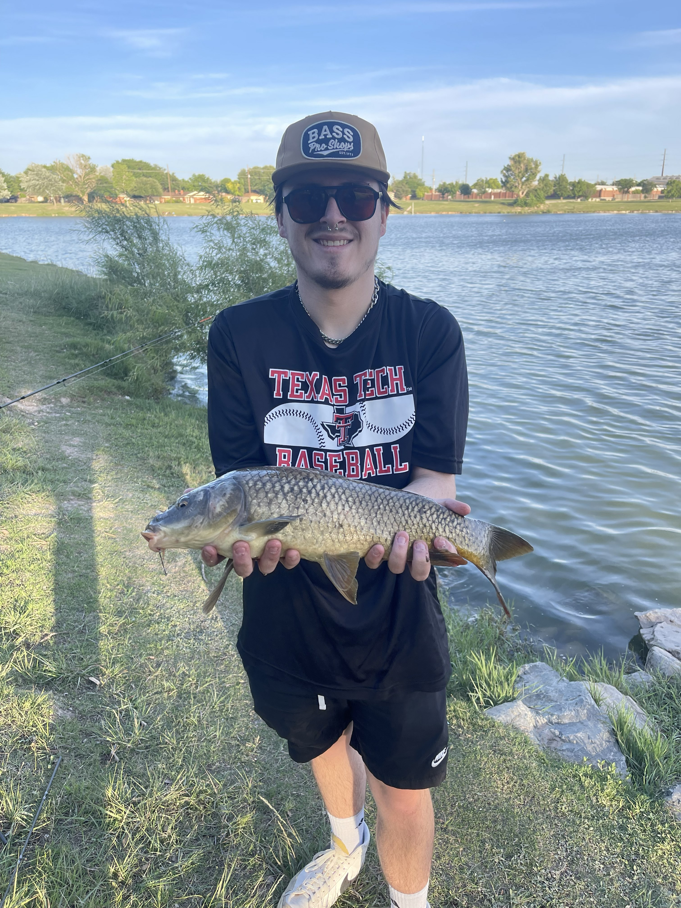
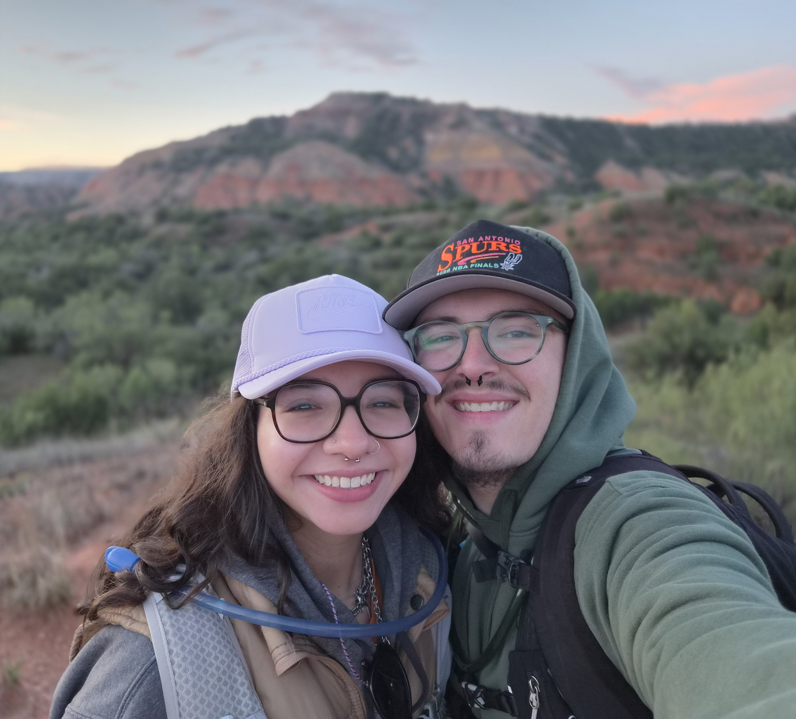

About Me
My name is Gavin Boyer. I am a senior computing applications major at Texas Tech University. While I do participate in online learning with TTU, I am originally from Lubbock, TX. I graduated from Frenship High School in 2022 with a 4.0 GPA, but have since struggled a bit in college. Throughout these struggles, my wonderful fiancee has been by my side. I am an avid outdoorsman and have been since I could hold a fishing rod. If you cannot find me, I am normally fishing. As for work, I am currently in retail and substitute teaching. It allows a nice balance of work and school, as I can be somewhat selective with my subbing hours. Last semester I was honored to be on the President's List and I aim to continue that over these next few months I have left.
As an avid angler, I have caught many fish from the ocean to your backyard creek. Here are a few of my favorites.






Skills and Accomplishments
As a coder, I am unaccomplished, as of yet, althought I do have some completed websites that I have created. Most of my accomplishments came from music:
- 2020 Coltman Chamber Music Competition Finalists
- 2021 Fischoff International Chamber Competition Junior Winds Division Silver Medalist
- 2021 Texas UIL State Solo and Ensemble Outstanding Soloist
- 2022 Texas UIL Inaugural Chamber Music Competition Grand Winners
- 2022 Texas UIL State Solo and Ensemble Outstanding Soloist
- Conflict Management
- Critical Thinking
- Time Management
- Microsoft Office Suite
- HTML & CSS
- Salesforce
- Leadership
Projects
Since joing the computing applications major, I have completed a few projects that I am very proud of. Both of the projects below are websites I created using HTML, CSS, and Markdown languages.